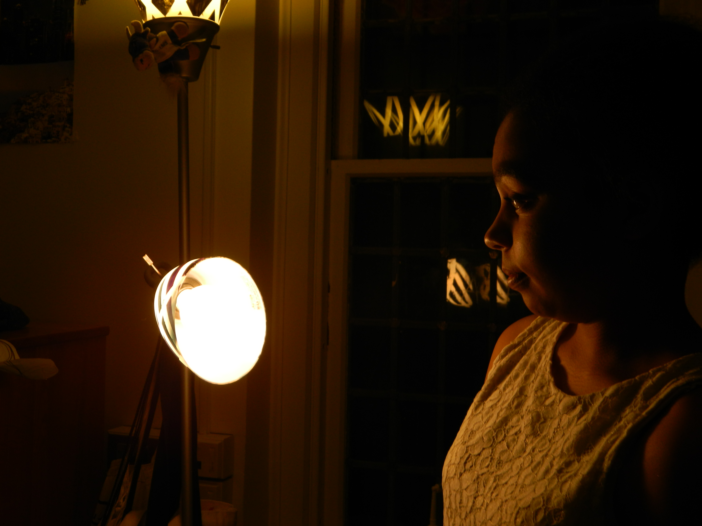

Letter From
The Editor
For as long as I can remember, I’ve seen things in color. Songs, feelings, foods, moments; each holds its individually wrapped shade that invades my head when they pass me by. Holding the hand of someone I love is deep midnight blue like the sky in Somerville after a rainstorm. My best friend’s laughter is swirled with rich mahogany and chestnut. Getting in bed after a particularly arduous day is the dark, metallic orange of pennies. Fear is gray.
The world we live in continues to be flat and colorless, filled with violence, terror, and brutal imaginations. I spend each of my days striving to collect colors, to break open and split apart the fear that clouds my life as a Black woman, and the lives of marginalized people everywhere. Often this collection comes from the words I read. Words, for me, give off the brightest, most brilliant colors. They are an antidote for the powerlessness that I feel in the face of structures that demand my demise. They remind me that while this world may not have been built for many of us to survive it, the people before us and those who will come after have used their hands (and their pens) to see through the hopelessness and imagine a new world—one throbbing with hues that reach into each splintered corner and start the process of transforming and mending—and call upon us to do the same.
Inside the pages of this Literary Issue are an abundance of these colors. They are the words of people whose voices are normally silenced, cast aside, forgotten, and erased. They are the words of people of color, queer and trans people, poor people, Disabled people, the words of people who are often overlooked on this campus and in the world. Their words are words of fear, of hurt, of melancholy, of questions without clear answers. But they are also the words of warmth, of strength, of hope, of resistance. They are words that demand to be read and heard. They are the stories that need to be told. So, I hope you, Reader, open these pages with tender care and let them flood you with color.
My least favorite icebreaker is the one where you go around in a circle and share what superpower you would choose to develop if you could, what superhuman ability you would will into your existence if given the chance. I nearly always choose mindreading because, admittedly, never knowing what other people are thinking is the Anthony Davis in the NBA All-Star game of sources of my anxiety. Yet, I’ve always found myself in icebreaker situations with people whose superpower of choice is invisibility. It’s funny—invisibility is the superpower I never got to choose.
To be in my skin—to be a fat, mentally-ill, poor, Black woman—is to be both hypervisible and invisible, to be seen but never truly seen, never quite human, heard but never quite understood. It’s not that I think all White people see me and see the demon that Darren Wilson saw when he murdered Michael Brown; it’s more so that Black people in the liberal White imagination are still more enigma than human. Black people in the liberal White imagination are still the code that needs to be cracked, objects lost in translation. After the murder of Walter Scott, Brittany Cooper wrote about what she calls “the spectacle of Black death,” the cultural phenomenon of Black people nationwide scrolling through their Facebook friends’ vacation photos in the same breath as videos of Black people being slain in the street. Yet, I’ve come to know that not only is Black death a spectacle to White people, but so also is Black life.
On my best days in the predominantly White spaces I inhabit—whether it is the New England boarding school I left my home community to attend or the New England university I attend now—I feel like an exhibit in an exclusive, expensive museum. Except, I am missing the little white label that gives me context, that makes me comprehensible. On my worst days, I feel like a beast trapped in a zoo, a beast to be gawked at, a beast that somehow managed to learn how to perform humanity well enough to attend a university among White people who, no matter what the circumstances may be, are afforded humanity.
I don’t remember the exact moment I realized that my New England private school had given me training rather than education—training to assimilate into a White corporate world that will never truly accept me. The romance of sending a Black girl to New England so she can chase opportunity fades when you realize the cost of that opportunity. The romance of Beauty & the Beast quickly fades when you realize that Beauty could not have loved Beast without first training him, without teaching him how to hold a spoon, without teaching him how to ice skate, without teaching him to be more like her. The romance of Beauty & the Beast fades when you realize that Disney slimly averts tragedy
The Spectacle of Black Life
By Kriska Desir
through Beast’s transformation into a handsome, European prince, Adam, just in the nick of time. The movie in which Beast does not remain Beast aborts his realization that he will never be like Belle. I wonder what happens in happily ever after one morning when Beast wakes up next to Belle and the realization that she will only ever see him as unhuman sinks in.
On my worst days, I struggle to reconcile my pride in being the first person in my family to attend college with the shame that comes from being a symbol for my high school and university to use. It’s a very particular shame to know that an institution can parade me around as if to say, Look how well we trained it. Look how generous we are to have given it the opportunity to attend our school. Isn’t it darling how it’s learned to act just like us? It’s a very particular shame to know that the Black scholarship kid is symbol rather than human. To know that I serve to allude to diversity, to the changing times, to some hackneyed form of inclusion. To know that, on some level, I serve as a placeholder.
Some of you will read this and twist your way out of complicity just as you maneuvered your way out of the complicity of Trump’s election—just like you shifted the blame onto poor, rural, White America. Yet the relentless and ghoulish fingers of the spectacle-making of my Black life extend beyond the institutional and into the personal every day. Yet my experience as a Black woman among a community that claims liberalism is surreal at best and at worst, traumatic.
When I listened to my American Literature class discuss a text on Black womanhood, I, the only Black woman in the room, wondered if anyone else felt like they were watching a scene in an absurdist film. If a room of forty White people discussing Black womanhood as symbol, as an object of curiosity, all while protected by the red brick walls of Eaton Hall, reads to anyone else like a scene in a dark comedy.
When my peers shyly admit to me that they at first found me intimidating, I have to wonder if they would find me intimidating if I were a White, chubby girl from New Jersey rather than a Black one. Why White girls get to be soft, get to be vulnerable, and I am forever the angry, scary, sassy one. Why a boy read an article I wrote on women in rap, looked me in the eye, and reported to me that I sounded “so angry.” He said it and he smiled as if a childish grin would excuse the racist and sexist implications of dismissing my critique of misogynoir in (White) criticism of rap as mere anger. As if his not-too-subtle “angry Black woman” comment was just a joke.
When my peers ask me to explain “slang” to them so they can co-opt it and scream it to each other across the academic quad, I have to wonder why they feel entitled to African-American Vernacular English at all, why they feel the need to insert themselves into a culture that was not at all created for their consumption. I wonder if they think that “dead ass” came out of thin air, if “bae” came out of thin air, if “shook” came out of thin air. I wonder if they ever think about the Black people who created those terms to communicate with other Black people. I wonder if they will ever stop inserting themselves in spaces where they have no right to be.
When White social justice fanatics perform monologues on the Black plight to me, when they recite their readings from The New Jim Crow to me, when they apologize to me “on behalf of White people everywhere,” I have to wonder if they have ever for a second considered that I am not a vestibule for White guilt. That I am a human being. That I am never going to hand them the Woke White of the Year Award because that award doesn’t exist. That they’re not doing me a favor by being “woke.”
We like to call these exchanges microagressions, but the term minimizes what is truly at play here: the denial of my humanity. There’s nothing micro about ignoring the humanity of another person. That’s just racism.
I saw Noname at The Middle East this weekend and was struck by the moment during her set where she briefly left the stage. Noname had been building to a moment with “Casket Pretty” after a few of her more upbeat songs, weaving the opening bars of the delicate and powerful discussion of Black death in and out of her set. However, when she finally got to the song, she stopped after the first verse. She said, “This shit so awkward to perform in front of all these White people. You don’t even understand. My niggas is casket pretty.” She continued, “Y’all obviously ain’t feeling this so let’s just move on.” I was struck by the gravity of a Black woman sharing her art with an audience who only enjoys her so long as she doesn’t remind them of their role in her oppression. I was struck by her refusal to move on without first acknowledging the implications of performing Black music in front of a mostly White crowd, a White crowd that likes a good beat, a good sing-the-nigga-long, but not a frank discussion of what being a nigga actually entails.
I was struck when I realized that none of my friends were thinking about the denial of humanity inherent in a crowd of White people singing along to a song about Black death as if it were a campfire song that everyone there could relate to. This is the surrealism of my Black life, this is the spectacle—a mob of White people singing a mourning song as they tie a noose around a Black woman’s neck, and I, a Black woman too, must watch the lynching helplessly. And I, a Black woman, am dying too.
I am trying to imagine a Beauty & the Beast where Beast rejects Belle’s lessons in civility. The Disney movie where Beast points out that Europe is the true savage, not he. The Disney movie where Beast does not want Belle’s love. I have been thinking a lot about what it means to seek recognition of your humanity from institutions built on your unhumaning, institutions that continue to thrive from the fuel of your unhumaning. I like to think that my joy when Moonlight won Best Picture at the Oscars was in the turning over of the awards from White and, in my view, undeserving hands to Black, deserving ones. Yet, if I take a critical look at myself, a small part of me still believes that White recognition holds some stock. Otherwise, I wouldn’t have been upset at all at the thought of Moonlight losing Best Picture. I wouldn’t have been upset when Beyoncé lost Album of the Year for Lemonade either.
And still, I am trying to imagine a world where White recognition means nothing. Where I don’t even think about it. At the end of it all, I’m not sure that I need White recognition of my humanity anymore. I’m not sure that White recognition of the validity of my life, White recognition that my life “matters,” is the answer.
I have been fascinated by the thought of destruction as a form of creation—how a jazz artist like Coltrane might create through the systematic destruction of a framework of chord-patterns or how a poet like Baraka might create through a systematic violation of a lingual structure. Dissonance, disruption, and destruction are so unholy to Western ears, yet so inherent to Black art. Dissonance, disruption, and destruction are so unholy to Western consciousness yet so inherent to my liberation.
A conversation with my friend Jonathan took this train of thought a step further. We discussed the conceptualization of Black as unhuman as woven into the fabric of the White understanding of its own humanity. It is only human because it exists in juxtaposition to Black unhumanity—one cannot exist without the other. White supremacy can function without Black unhumaning no more than a car can function without fuel. Yet, so many people who would call themselves my allies reach over destruction for platitudes and niceties, and at times, I don’t blame them—the former calls for their own undoing. In “Refusing Blackness-as-Victimization,” João Costa Vargas and Joy James write, “A genocidal logic cannot be altered or remedied without the erasure of both parties, the colonizer and the colonized. Without the disappearance of blackness as ‘evil’ or ‘sin’ and whiteness as ‘value’ or ‘virtue’ there is no fundamental change.”
For years, I wondered what my non-Black friends saw when they looked at me, wondering if they saw a full human being or if they saw their loud Black friend, their funny Black friend, their sassy Black friend. Sometimes I still do. And still I look at my non-Black friends knowing that the choice between my liberation and their undoing is not a hard one. It is barely a choice at all. The only choice is whether or not to look them in the eyes when I say, “I love you, but you’re killing me.”
And still, I am here. I am human whether or not you believe it.
